Bayesian Conjugacy
pcvr v1.0.0
Josh Sumner
Source:vignettes/articles/pcvrTutorial_conjugate.Rmd
pcvrTutorial_conjugate.RmdOutline
-
pcvrGoals - Load Package
- Bayesian Statistics Intro
- Bayesian Conjugacy Theory
- Bayesian Conjugacy Example
pcvr::conjugate- Supported Distributions
-
pcvr::conjugatearguments - Reading
conjugateoutput
pcvr Goals
Currently pcvr aims to:
- Make common tasks easier and consistent
- Make select Bayesian statistics easier
There is room for goals to evolve based on feedback and scientific needs.
Bayesian Statistics Intro
| Frequentist | Bayesian | |
|---|---|---|
| Fixed | True Effect | Observed Data |
| Random | Observed Data | True Effect |
| Interpretation | P[Data | No Effect] | P[Hypothesis | Observed Data] |
Bayesian Conjugacy Theory
= Posterior Distribution (Conclusion as a PDf)
= Prior Distribution (Knowledge as a PDF)
= Likelihood (Data that we collected)
= Marginal Distribution (this is the problem area)
Solving this integral is potentially a very difficult problem.
Historically there have been two answers:
- Find pairs of likelihood functions and Priors that integrate easily
- Numerical Methods
Solving this integral is potentially a very difficult problem.
Historically there have been two answers:
- Find pairs of likelihood functions and Priors that integrate easily (these are the conjugate priors)
- Numerical Methods (Powerful computers making numeric approximations via MCMC, see advanced growth modeling tutorial)

Bayesian Beta-Binomial Conjugacy
In the previous example we updated a fundamental verb with context.
Here we’ll update a probability distribution with data.
The P parameter of a Binomial distribution has a Beta conjugate prior.
$$\begin{equation} x_1, \ldots, x_n \sim Binomial(N, P) \\ P \sim Beta(\alpha, \beta) \\ Beta(\alpha', \beta' |(x_1, \ldots, x_n)) = Beta(\alpha, \beta) \cdot L(\alpha, \beta|(x_1, \ldots, x_n)) \\ \alpha` = \alpha + \Sigma(\text{Successes} \in x) \\ \beta` = \beta + \Sigma(\text{Failures} \in x) \end{equation}$$


Bayesian Beta-Binomial Conjugacy
Generally we can think of conjugacy as when we know the distribution of a parameter in another distribution.

pcvr::conjugate
In pcvr 11 distributions are supported in the
conjugate function.
We’ll go over those distributions, what they tend to represent, how they are updated, and what the common alternative tests would be for that kind of data.
pcvr::conjugate
| Distribution | Data | Updating | Common Option |
|---|---|---|---|
| Gaussian | Normal | Z-test | |
| T | Normal Means | T-test | |
| Lognormal | Positive Right Skewed | Wilcox | |
| Lognormal2 | Positive Right Skewed | Wilcox | |
| Beta | Percentages | Wilcox | |
| Binomial | Success/Failure Counts | Wilcox/logistic regression | |
| Poisson | Counts | Wilcox/glm | |
| Neg-Binom. | Overdispersed Counts | ) | Wilcox/glm |
| Von Mises | Circular | Watsons | |
| Uniform | Positive Flat | Wilcox | |
| Pareto | Heavy Tail | Wilcox | |
| Gamma | Right Skew | Wilcox | |
| Bernoulli | Logical | Logistic Regression | |
| Exponential | Right Skew | Wilcox/glm |
pcvr::conjugate
## Warning: Removed 2 rows containing missing values or values outside the scale range
## (`geom_bar()`).
pcvr::conjugate arguments
conjugate takes one or two sets of SV (numeric) or MV
(matrix/df) data. Alternatively this can be a formula and a dataframe,
similar to stats::t.test.
pcvr::conjugate(
s1 = NULL, s2 = NULL,
method = c(
"t", "gaussian", "beta",
"binomial", "lognormal", "lognormal2",
"poisson", "negbin",
"uniform", "pareto",
"vonmises", "vonmises2"
),
priors = NULL,
plot = FALSE,
rope_range = NULL, rope_ci = 0.89,
cred.int.level = 0.89,
hypothesis = "equal",
support = NULL
)
pcvr::conjugate arguments
The method argument specifies the distribution to be
used. See ?conjugate for further details.
pcvr::conjugate(
s1 = NULL, s2 = NULL,
method = c(
"t", "gaussian", "beta",
"binomial", "lognormal", "lognormal2",
"poisson", "negbin",
"uniform", "pareto",
"vonmises", "vonmises2"
),
priors = NULL,
plot = FALSE,
rope_range = NULL, rope_ci = 0.89,
cred.int.level = 0.89,
hypothesis = "equal",
support = NULL
)
pcvr::conjugate arguments
The priors argument allows you to specify the prior
distribution. If left NULL then default priors will be used
pcvr::conjugate(
s1 = NULL, s2 = NULL,
method = c(
"t", "gaussian", "beta",
"binomial", "lognormal", "lognormal2",
"poisson", "negbin",
"uniform", "pareto",
"vonmises", "vonmises2"
),
priors = NULL,
plot = FALSE,
rope_range = NULL, rope_ci = 0.89,
cred.int.level = 0.89,
hypothesis = "equal",
support = NULL
)
pcvr::conjugate default priors
## Warning: Removed 2 rows containing missing values or values outside the scale range
## (`geom_bar()`).
pcvr::conjugate arguments
The plot argument controls whether or not a ggplot is
made of the results. See later examples.
pcvr::conjugate(
s1 = NULL, s2 = NULL,
method = c(
"t", "gaussian", "beta",
"binomial", "lognormal", "lognormal2",
"poisson", "negbin",
"uniform", "pareto",
"vonmises", "vonmises2"
),
priors = NULL,
plot = FALSE,
rope_range = NULL, rope_ci = 0.89,
cred.int.level = 0.89,
hypothesis = "equal",
support = NULL
)
pcvr::conjugate arguments
The rope_range and rope_ci arguments allow
region-of-practical-equivalence (ROPE) testing using the difference in
the posterior distributions if two samples are given.
pcvr::conjugate(
s1 = NULL, s2 = NULL,
method = c(
"t", "gaussian", "beta",
"binomial", "lognormal", "lognormal2",
"poisson", "negbin",
"uniform", "pareto",
"vonmises", "vonmises2"
),
priors = NULL,
plot = FALSE,
rope_range = NULL, rope_ci = 0.89,
cred.int.level = 0.89,
hypothesis = "equal",
support = NULL
)
pcvr::conjugate arguments
cred.int.level controls the credible intervals that are
calculated on the posterior distributions. The default of 89% is
arbitrary.
pcvr::conjugate(
s1 = NULL, s2 = NULL,
method = c(
"t", "gaussian", "beta",
"binomial", "lognormal", "lognormal2",
"poisson", "negbin",
"uniform", "pareto",
"vonmises", "vonmises2"
),
priors = NULL,
plot = FALSE,
rope_range = NULL, rope_ci = 0.89,
cred.int.level = 0.89,
hypothesis = "equal",
support = NULL
)
pcvr::conjugate arguments
The hypothesis argument sets which hypothesis is tested
out of “greater”, “lesser”, “equal” and “unequal”. These are read as “s1
equal to s2”, etc.
pcvr::conjugate(
s1 = NULL, s2 = NULL,
method = c(
"t", "gaussian", "beta",
"binomial", "lognormal", "lognormal2",
"poisson", "negbin",
"uniform", "pareto",
"vonmises", "vonmises2"
),
priors = NULL,
plot = FALSE,
rope_range = NULL, rope_ci = 0.89,
cred.int.level = 0.89,
hypothesis = "equal",
support = NULL
)
pcvr::conjugate arguments
The support argument optionally lets you set the support
range for the distribution. In practice this exists for internal use and
is not something you would generally want to set.
pcvr::conjugate(
s1 = NULL, s2 = NULL,
method = c(
"t", "gaussian", "beta",
"binomial", "lognormal", "lognormal2",
"poisson", "negbin",
"uniform", "pareto",
"vonmises", "vonmises2"
),
priors = NULL,
plot = FALSE,
rope_range = NULL, rope_ci = 0.89,
cred.int.level = 0.89,
hypothesis = "equal",
support = NULL
)Reading conjugate output
Lastly we’ll show a few interpretations of conjugate
output in the plant phenotyping context.
- Germination Rates
- Area
- Leaf Counts
- Hue
Germination Rates
Germination Rates (or other binary outocmes like flowering or death) can make good sense as Beta-Binomial data.
Germination Rates
Here we’d simply conclude that there is about a 19% chance that the germination rate is the same between these two genotypes after 1 week. We could do more with ROPE testing, but we’ll do that in the next example.

Area
Lots of phenotypes are gaussian and conjugate can be
used similarly to a T-test with the “t” method. Consider area data that
looks like this example.

Area
Here we include a ROPE test corresponding to our belief that any difference in Area of is biologically insignificant. We also show the formula syntax and use non-default priors here (since default priors include negative values which can’t happen with area).
Area
Our plot shows about a 83% chance that these distributions are unequal and a 24% chance that the difference in means is within .

Area
The other aspects of the output are a summary and the posterior parameters.
lapply(res, class)## $summary
## [1] "data.frame"
##
## $posterior
## [1] "list"
##
## $plot
## [1] "patchwork" "gg" "ggplot". . .
The summary is a data.frame with a summary of the information in the plot.
res$summary## HDE_1 HDI_1_low HDI_1_high HDE_2 HDI_2_low HDI_2_high hyp post.prob
## 1 15.00699 13.38714 16.62685 11.93384 9.802616 14.06506 unequal 0.8206558
## HDE_rope HDI_rope_low HDI_rope_high rope_prob
## 1 3.077311 0.245071 5.602771 0.23121Area
The other aspects of the output are a summary and the posterior parameters.
lapply(res, class)## $summary
## [1] "data.frame"
##
## $posterior
## [1] "list"
##
## $plot
## [1] "patchwork" "gg" "ggplot"The posterior is the prior list updated with the given data, this allows for Bayesian updating hypothetically.
do.call(rbind, res$posterior)## mu n s2
## [1,] 15.00699 11 9.383789
## [2,] 11.93384 11 16.24362Leaf Counts
There are also several phenotypes that are counts. Numbers of vertices, leaves, flowers, etc could all be used with one of the count distributions. Here we consider Poisson distributed leaf counts between two genotypes.
Leaf Counts
Here we model $X \sim Poisson(\lambda)\\ \lambda \sim \Gamma(A, B)$
res <- conjugate(
s1 = y ~ geno, s2 = df,
method = "poisson",
plot = TRUE,
rope_range = c(-1, 1),
priors = list(a = 1, b = 1),
hypothesis = "unequal"
)
Leaf Counts
We can comfortably say that the difference in the posteriors is not in [-1, 1] and there is a 91% chance that the Gamma distributions for are different.

Hue
Finally, we’ll show an example using what is likely the
least-familiar distribution in conjugate, the Von-Mises
distribution.
The Von-Mises distribution is a symmetric circular distribution defined on .
To use Von-Mises with data on other intervals there is a
boundary element in the prior that is used to rescale data
to radians for the updating before rescaling back to the parameter
space. See ?conjugate for more examples of the
boundary.
## `stat_bin()` using `bins = 30`. Pick better value with `binwidth`.Hue
Note this is a very exaggerated example for the plant phenotyping setting since green happens to be in the middle of the hue circle, which wraps in the red colors.
If you do have wrapped circular data then looking at it in a non-circular space like this would be a problem. For values we normally get from plants other continuous methods can generally be a decent approximation.
ggplot(df, aes(x = geno, y = y, fill = geno)) +
geom_boxplot(outlier.shape = NA) +
geom_jitter(height = 0, width = 0.05) +
pcv_theme() +
labs(y = "Hue (radians)") +
scale_y_continuous(limits = c(-pi, pi), breaks = round(c(-pi, -pi / 2, 0, pi / 2, pi), 2)) +
theme(legend.position = "none")Hue
res <- conjugate(
s1 = y ~ geno, s2 = df,
method = "vonmises2",
priors = list(mu = 0, kappa = 0.5, boundary = c(-pi, pi), n = 1),
plot = TRUE
)
res$plot
Hue
Here our distributions are very similar and there is about a 79% chance that their parameters are the same given this data and our (very wide) priors.
Note that if you use data in a different boundary space
than radians the rope_range would be given in the observed
parameter space, not in radians.
res$plotConclusion
Hopefully this has been a useful introduction to Bayesian conjugacy.
Please direct questions/issues with pcvr::conjugate to
the pcvr github issues or help-datascience slack channel for DDPSC
users.